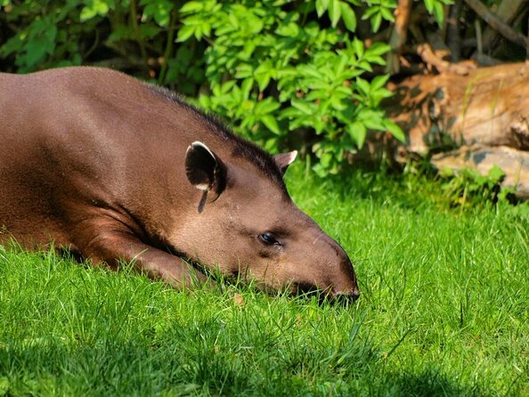

pagina principal
plantas en honduras
parque nacional la tigra
biosfera del rio platano
animales en honduras
muchas de las especies en honduras se encuentran en peligro de extincion por lo cual a planteado al gobierno, la secretaria y oganizaciones naturalistas nacionales e internacionales proveer, promover y velar por la proteccion de la biodivercidad de especies, como las reservas naturales que existen. la fauna en honduras es riquisima y variada siendo los mas comunes lo de vida arborea y los que viven en las corrientes fluviales aguas lacustres. los animales grandes no son muy numerosos pero hay cientos de especies de reptiles, anfibios y pajaros, lagartos y muchas variantes de especies de peses y otras muchas especies de mamiferos que viven en los arboles.
